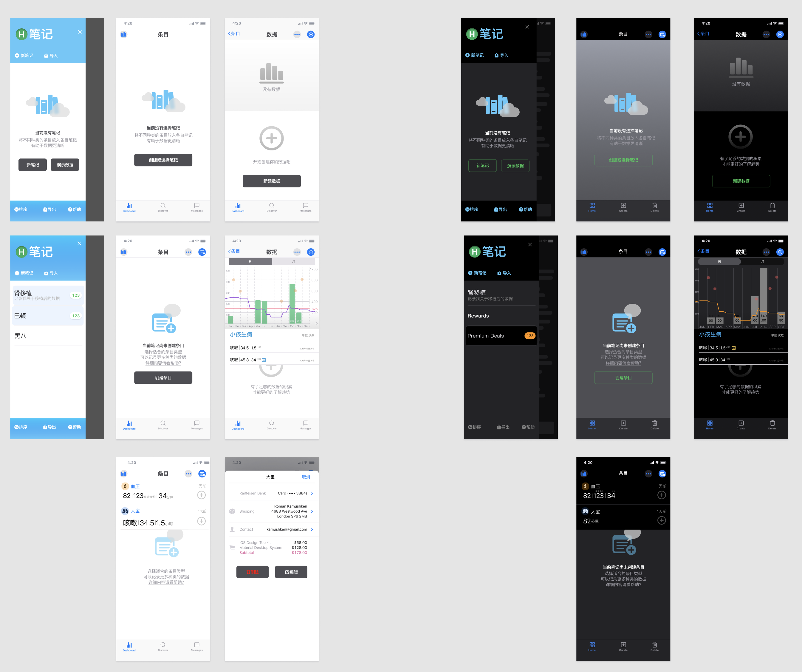
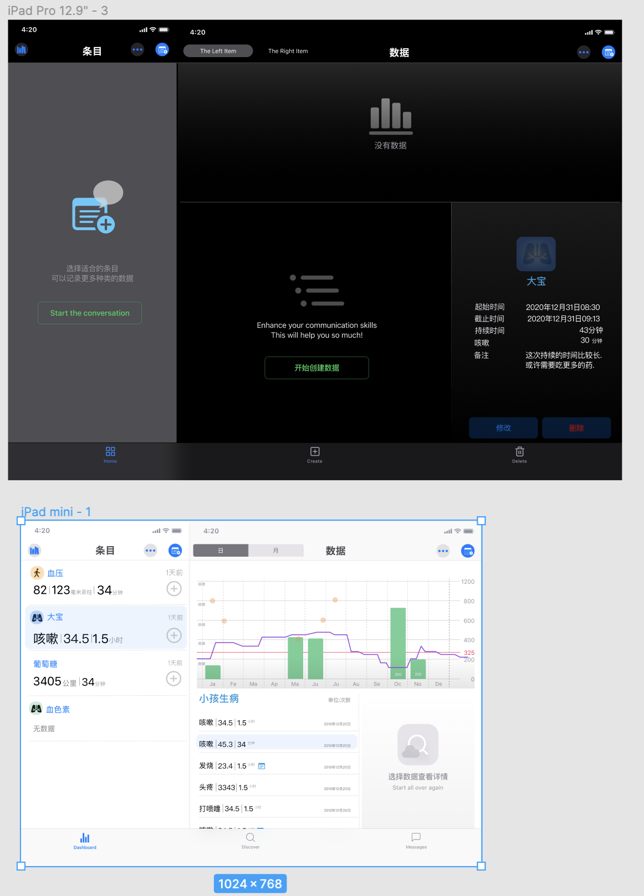
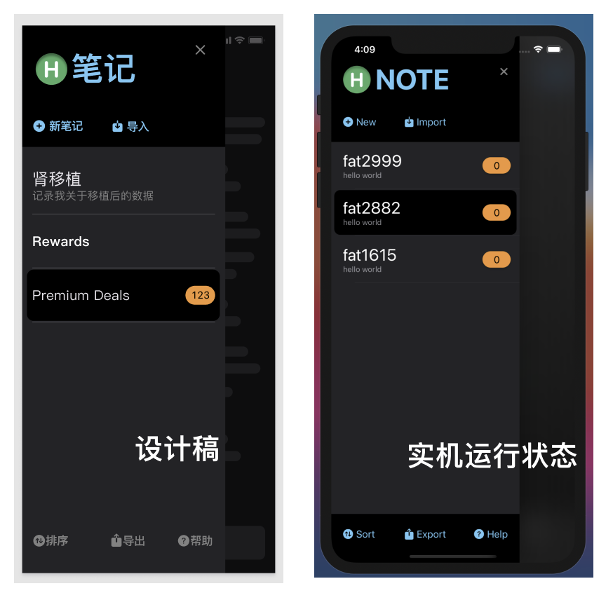

本周的由于其他琐事的原因,每天能够用于开发的时间基本上只能保证2-3个小时,所以进展不大.不过好在我也没有明确的进度指标.
由于2.0在功能上同1.0的区别并不太大,所以在功能需求设计上不需要花费太多的时间.这半年来我自己也基本总结了一个自己用起来比较顺手的MVVM框架所以在最开始的1周,并不用太费力变完成了一个最简陋ui的原型版.
尽管叫原型版,但数据流、数据库操作等待基础代码都是要用于正式版中的.
在上周,苹果发布了Xcode12的beta5,其中提供了在SwiftUI lifecycle下的CoreData模版.所用的思路和我现在差不多.都是使用static来保证上下文的唯一性.另外苹果也提供了一个用于preview的思路,创建了一个in-memory 的Sqllite.这个也和我现在的途径差距不大,我现在是直接通过生成Sample NSManageObject给Preview来实现的.反正都是可以在preview中比较好的支持CoreData数据.
preview在Xcode12中得到了很大的加强,崩溃的机率明显下降很多.我目前几乎所有的View都可以完美的preview出来.
本次升级我对于app的UI的还是有点企图心的,最初也希望能够制作成一个比较有风格的app.不过在仔细权衡过后,还是放弃了.放弃的理由也十分简单,对于个人开发者或者小型团队开发者,如果没有好的审美判断力、美工执行力、交互逻辑的设计能力,一个貌似具有个人风格的设计很可能会以惨败告终.
最终还是决定以iOS的原生UIKit基础上来进行设计.不过即使苹果的原生控件已经比较有美感,不过想要好的色彩搭配、合适的布局、顺畅的交互仍然不是一件容易的事情.
专业的事情还是要找专业的解决方案.最终,我在gumroad.com上找到了一个自己比较喜欢的控件设计包Figma iOS UI kit,以99美金买了下来.
这个包的比较适合开发iOS原生的app.由于它同时提供了light和dark两个模式下的对应Demo,所以指导性还是很强的.
在研究这个模版的设计文件过程中我才发现,一个看似简单的控件其实里面有着非常多的细节.我试图在SwiftUI中在保证性能的情况下,实现更多的细节.
这是我目前一部分View的设计稿


目前已经针对完成的这一小部分开始编写代码了.之所以在没有完全完成设计的情况下便开始写代码,主要的原因是为了检查我在代码上对设计的还原度,同时也看一下当前的设计在实际运行状况下是否合理,以便总结经验完成下一步的全面设计.
figma功能上同Sketch差不多,而且最低门槛还是免费的.不过它对于网络的外网连接状况要求比较高.
在编写代码的时候,还是能够明显感觉到和设计之间的差别的,有些地方要做取舍,有些地方在实机上的显示又不尽如人意.只有不断的磨合才能增长经验.

总体而言使用Figma或Sketch进行的设计在SwiftUI中的还原度还是很高的.开发难度也不大.
在本周开发过程中,出现了一个让我比较头疼的地方,不过最终还是解决了.
在2.0中,我打算使用类似iOS邮件程序的侧滑菜单进行交互,不过当数据量增大时,显示变得异常卡顿.最终发现了问题出在List中不正确的使用了ForEach.具体关于这部分的内容,我已经记录在了另一篇文章中聊一下SwiftUI中的List和ForEach.
 支付宝打赏
支付宝打赏
 微信打赏
微信打赏
请我喝杯茶